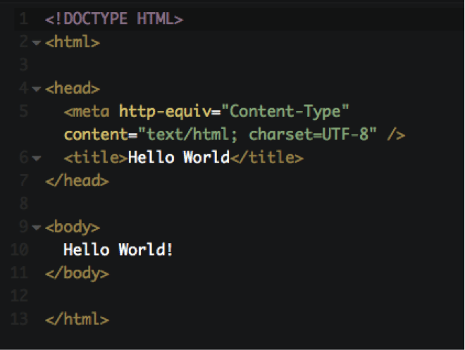
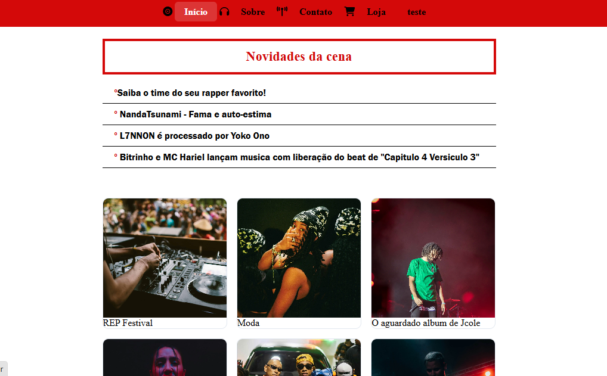
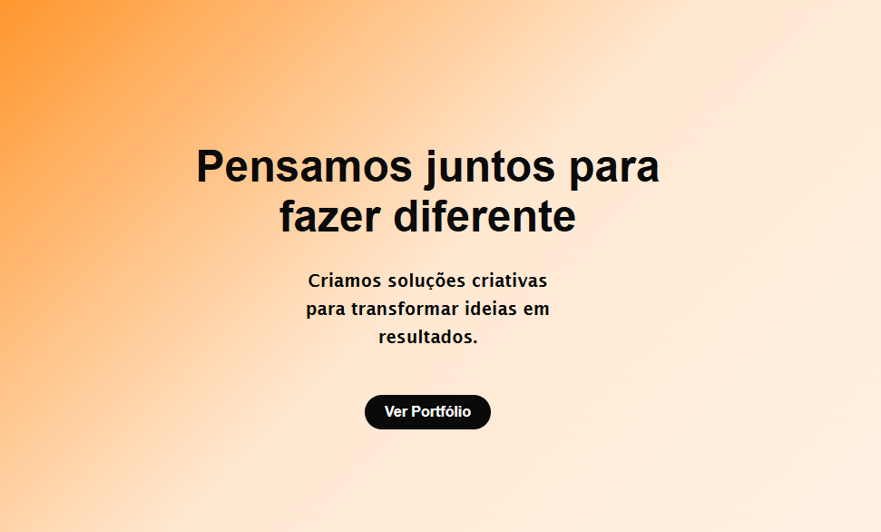
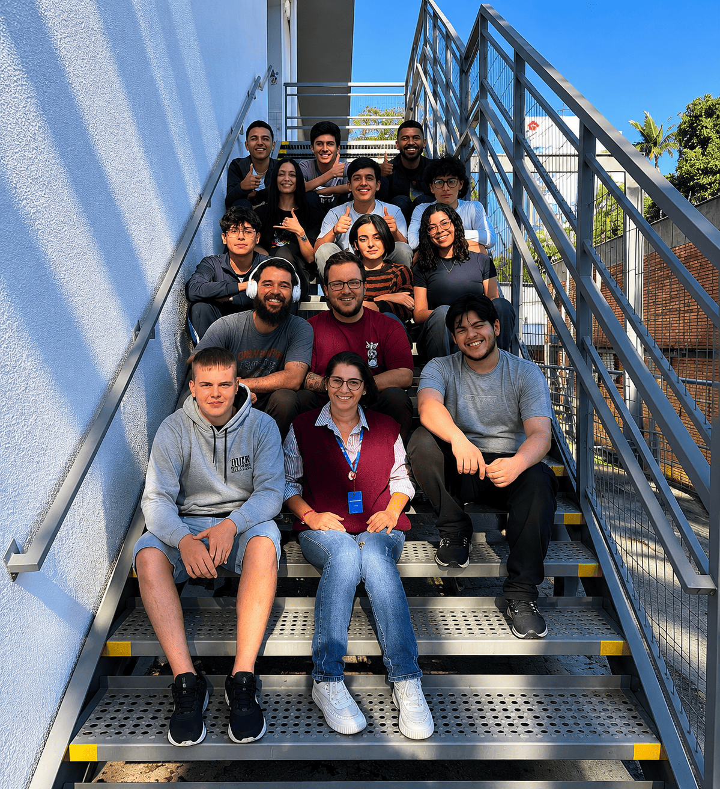
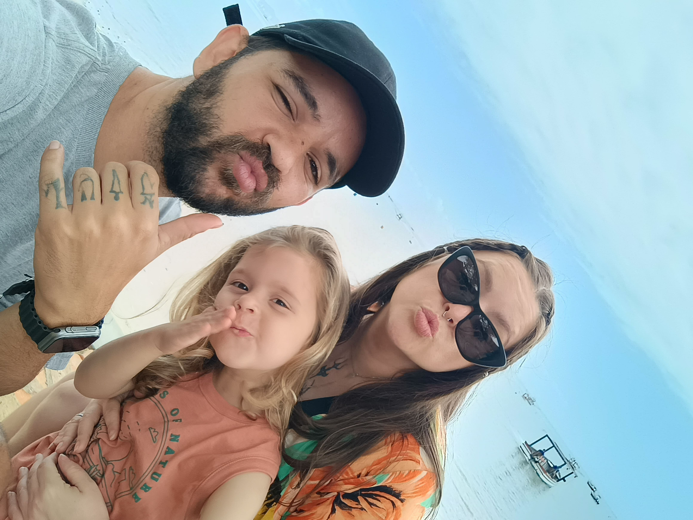

Esta página foi criada com o intuito de organizar meu aprendizado no curso de Front-End, desenvolvido pelo Entra21 e ministrado no SENAI Blumenau.
Aqui aprendemos, com a professora Karize, a criar páginas em HTML como a fundação dos nossos projetos, a decorá-las e deixá-las mais aconchegantes com CSS. Ela também nos ensinou a modernizá-las e torná-las mais inteligentes com JavaScript.
Aprendemos, ainda, a desenvolver páginas responsivas para qualquer aparelho e a entender como podemos transformar grandes ideias em realidade por meio da tecnologia.
Nas primeiras semanas, ainda estávamos nos adaptando a essa nova rotina, conhecendo os colegas, os professores, toda a coordenação e a estrutura do curso.
Começamos pelo HTML, escrevendo "Hello, World!" e entendendo o que estava bem ali na tela. (Parece mais complicado do que realmente é.)

Depois de algumas semanas, já estávamos mais familiarizados com a linguagem HTML e começamos a criar nossas primeiras páginas web. Aprendemos sobre tags, atributos e como estruturar o conteúdo de forma semântica.



Aprender Front-End se torna muito mais leve quando podemos contar com amigos para trocar ideias, tirar dúvidas e compartilhar conhecimentos.
Juntos, cada desafio vira uma oportunidade de aprender e evoluir como desenvolvedores.
Conforme os meses do curso foram passando, ampliamos nossos conhecimentos e desenvolvemos novas habilidades essenciais para o mercado de tecnologia.
Aprendemos JavaScript e TypeScript, criamos aplicações com Angular e entendemos a importância do Git e do GitHub para o versionamento de código e o trabalho colaborativo em equipe.
Além das competências técnicas, também tivemos aulas de Inglês aplicado à tecnologia, fundamentais para compreender documentações e ferramentas utilizadas no dia a dia de um desenvolvedor.
Durante essa jornada, aprendemos ainda técnicas para nos destacar no mercado de trabalho, fortalecendo nosso currículo, nossa comunicação e nossa preparação para os desafios da carreira em Desenvolvimento Front-End.
Cria a estrutura da página, organizando títulos, textos, imagens, links e outros elementos.
Define o visual do site, como cores, fontes, espaçamentos, animações e responsividade.
Adiciona interatividade ao site, permitindo criar menus, formulários, animações e muito mais.
Uma versão do JavaScript com tipagem, que ajuda a evitar erros e facilita o desenvolvimento.
Framework utilizado para desenvolver aplicações web modernas, organizadas e escaláveis.
Sistema de controle de versão usado para registrar mudanças e acompanhar a evolução do código.
Plataforma para armazenar projetos, colaborar em equipe e compartilhar código com outros desenvolvedores.
Técnica para adaptar o site a computadores, tablets e smartphones.
Meus planos para o futuro são conquistar uma oportunidade em uma grande empresa multinacional, trabalhando como desenvolvedor em regime home office, o que me permitirá realizar o sonho de morar perto da praia e ter mais qualidade de vida.
Também desejo, no futuro, empreender e abrir meu próprio bar, unindo minha paixão pela coquetelaria ao desejo de construir um negócio de sucesso.

Minha maior motivação para estudar, crescer profissionalmente e construir um futuro cheio de conquistas.